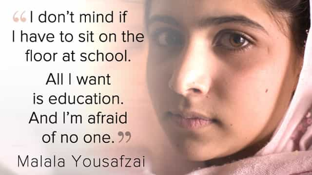
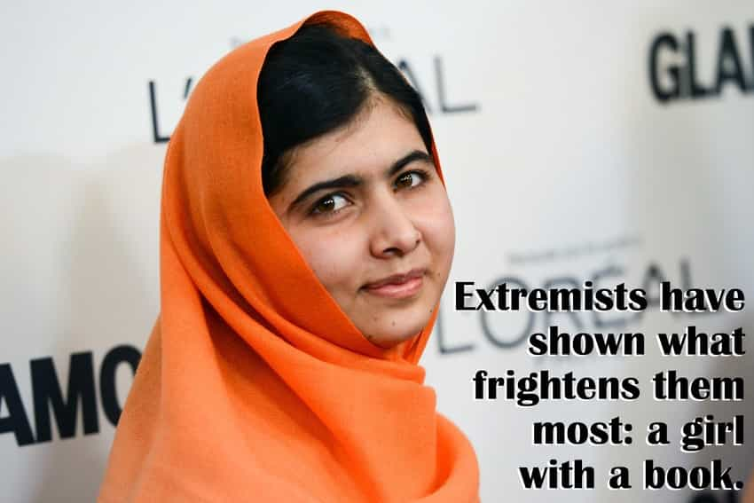
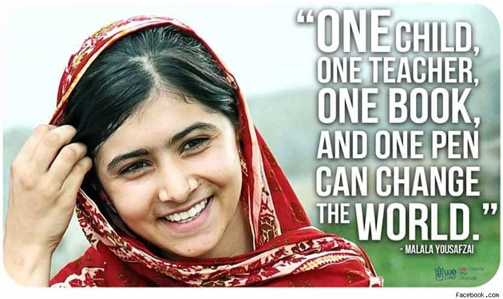
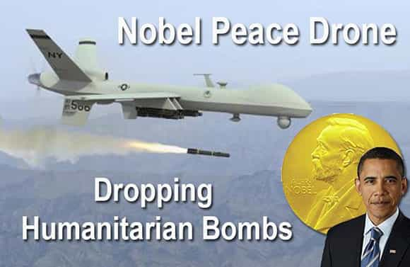
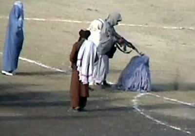

< < < Back
Nobel Peace Prize Recipiant Malala Yousafzai Is A Coward And A Hypocrite – Return Of Kings
So the increasingly irrelevant Noble Peace Prize was recently given out, and it came as a surprise to no one that the 2014 peace prize was shared by a 17-year-old Pakistani-born girl named Malala Yousafzai. For those of you (fortunate few) who haven’t heard of her, Malala is a supposed advocate for girls rights to education in any and all cultures and societies in the world.
She became internationally famous when, in 2012 at the age of 15, a member of the fanatical Muslim religious group, the Taliban, tried to shoot her in the head. Malala was wounded, but the shooter’s aim was piss-poor and the bullet wound up grazing her, entering the skin of Malala’s head and passing along it before it struck her in the shoulder. Malala was treated in Pakistan and eventually flown to England for further treatment once she was co-opted by globalists who wanted to make her a poster child.
The reason the Taliban shot Malala in the head was to send a message that they would attack girls who wanted to get a western-style education. So as soon as Malala had recovered, she immediately proved she was stronger than the Taliban by returning to her home in the Swat region of Pakistan. Except that last part didn’t happen.
When she awoke Malala eagerly embraced her celebrity status, travelling around the safe western world and making flagellant liberals and globalists feel good about themselves while peddling feminist dogma and her book. Malala bragged that she had bested the Taliban, and that she was not afraid of them. The world cheered her on, thumbing their nose alongside her at the oppressive Taliban from the safety of western countries.

Malala did not go back to live in Pakistan. She resides in England and was attending an English school when they came in and told her she won the Nobel Peace Prize. Malala was lucky that she was co-opted for an agenda and was given a great place to live in the western world, because while she is touring the globe, advocating girls rights to education, those same girls are the ones forced to continue to live in places where they can be hurt and killed for trying to attend school.
While Malala was laughing, playing and enjoying the safety of receiving an education in a predominantly white country found upon Christian morals, school girls in Africa were being kidnapped. While Malala mugged for the camera, giving speeches to the choir about how extremists are fools to think bullets can silence women’s rights in the 3rd and 2nd world in buildings protected by men with guns, Yazidi girls are being turned into sex slaves by those same men, most of whom will not face any prosecution or justice for their actions.

Let me repeat: after the Taliban shot her in the head, Malala opted to live in England. She ran away. They shot her in the head and she ran away. I don’t know in what crazy world people think that being chased out of your home counts is a victory but it certainly isn’t the real one. They shot Malala, and that scared her away. That was a decisive victory for the Taliban and for anti-female extremists everywhere.
And every time Malala gives a speech or drops another nonsensical, feel good quote for useful idiots to lap up, those extremists laugh. They’re laughing at Malala. And the girls Malala claims to represent, and whom she abandoned to their fate simply because she had the chance to, are the ones who are now suffering. Getting shot in the head is pretty extreme, and I could respect Malala if she took it and continued to live in Pakistan. But she ran. She gave up. The extremists won unequivocally, and no amount of desktop wall papers will change that irrefutable fact.
They thought a bullet would silence us, but they failed. Nothing changed in my life except this: Weaknesses, fear and hopelessness died. Strength, power and courage was born.
– Malala Yousafzai, speech to the United Nations.

Malala has done more harm than good to oppressed girls in crappy countries. She says books and education are what we need to change the world, then proved that completely untrue after she ran away when a man with a gun fired a bullet into her. Instead of reading text books and trying to fill her head with words, Malala would have been better served to take that textbook and hold it in front of her head to try and stop the bullet. Now Malala is a talking head, a mascot, someone do nothing people can point to and exclaim that they’re changing the world.
It’s fair to say that at this point the Nobel Peace Prize means nothing anymore. The science awards still have some merit, but the peace prize is a worthless political tool. It’s a feel-good scam, designed to sell books and globalist talking points. Not only have they given it to a girl who abandoned the very women she claims to represent, but within recent memory (2009) the Nobel institution also gave the prize to a man whose governmental policies continue to result in the deaths of hundreds of civilians, and whose administration continues to destabilize nominally peaceful countries all over the globe with a Byzantine surveillance network which also spies domestically on their own war-weary citizens, and whose administration is continually manipulating the press in an attempt to drag the war-weary people into yet more conflicts.
The only rational explanation as to why they gave him the peace prize was simply because he was the first black-skinned president of the United States of America.

But that doesn’t matter. Dignity and morals have no place in the modern world. At least it has no place in our so-called noble institutions, the places where we supposedly celebrate the best of humanity. No, we mustn’t have standards. We need to keep making guilty privileged people feel good and like they’re doing something by cheering on a 3rd world mascot. We need to keep stroking Malala’s ego and filling up her pocket book. We need to keep showing the globalist elite that we’re still so blind and stupid that we’ll eagerly cheer on their token ethnic talking head while they keep waging wars and funding the very same groups who make girls lives a misery with cash and weapons.
So yes, never fear you ladies of the 2nd and 3rd world. You, too, can brave all those bad men and receive an education: so long as there are prosperous countries founded upon and still more or less exercising European Christian morals that still exist for you to run to (and which you can afford to run off to in the first place), and that you’re willing to be a hollow mascot for the powers that be in those countries.
If you can’t…whelp, better shut up, take your beatings and get into the kitchen because all your champions are too busy making cash and soaking in the congratulations about how brave they are after they’ve completely abandoned you.

Read More: The Frenchman Who Took A Stand Against Socialism


{kind=link}
{kind=link}
{kind=link}
{kind=link}
{kind=link}
{kind=link}